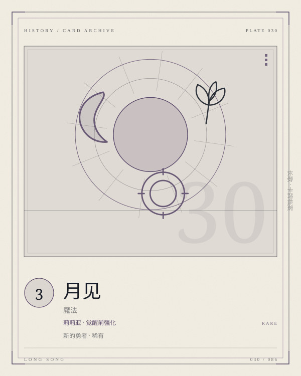

PLATE 030 / 086MOONVIEW
卡面为程序生成的概念图版；卡文与规则以本页正文为准。
CARD / LILIA / 魔法
月见
莉莉亚 · 觉醒前强化
新的勇者稀有魔法COST 3强化转化
【限定】使莉莉亚获得+150+100与专属魔法减一花费，直到下个敌方回合结束。莉莉亚觉醒后，转换为「弥望」。
- COST
- 3
- C / A / D
- —
- GROUP
- 莉莉亚魔法
- LIMIT
- 2构筑上限
归属 莉莉亚 · 新的勇者 · 稀有。上限字段为「2」；原典未列上限的卡，页面不替它补。
关联 LINKS · 出边 + 入边 · 同目标去重
关联不是规则联动。它记录这张卡在设计与叙事上依赖谁、被谁依赖；跨阵营的边只标「对照」。
转化
弥望
莉莉亚觉醒后，月见转化为弥望
被检索
苍白之月
两费月见最常见的出场方式，是被苍白之月带出来
配套
真理的钥匙
钥匙减费，月见减专属费，费用越压越低
词条 KEYWORDS IN TEXT
限定专属魔法只能在所属英雄在场上时使用。
觉醒获得觉醒面板，同时中止原有蓄能。
转换卡变为另一张；张数不变。
ARCHIVIST'S NOTE
肥鱼碎碎念
三费，限定，使莉莉亚获得 +150/+100 与专属减一费，直到下个敌方回合结束；莉莉亚觉醒后，转化为弥望。它是莉莉亚觉醒前的主要强化牌。
它加的是攻击和防御，但莉莉亚不是靠攻击赢的。它真正的价值是「专属减一费」：让下一张专属提前一回合到来。
月见是「看见月亮」，弥望是「望着月亮」。一字之差，一个在觉醒前，一个在觉醒后。
—— 归档者，读这张卡的时候